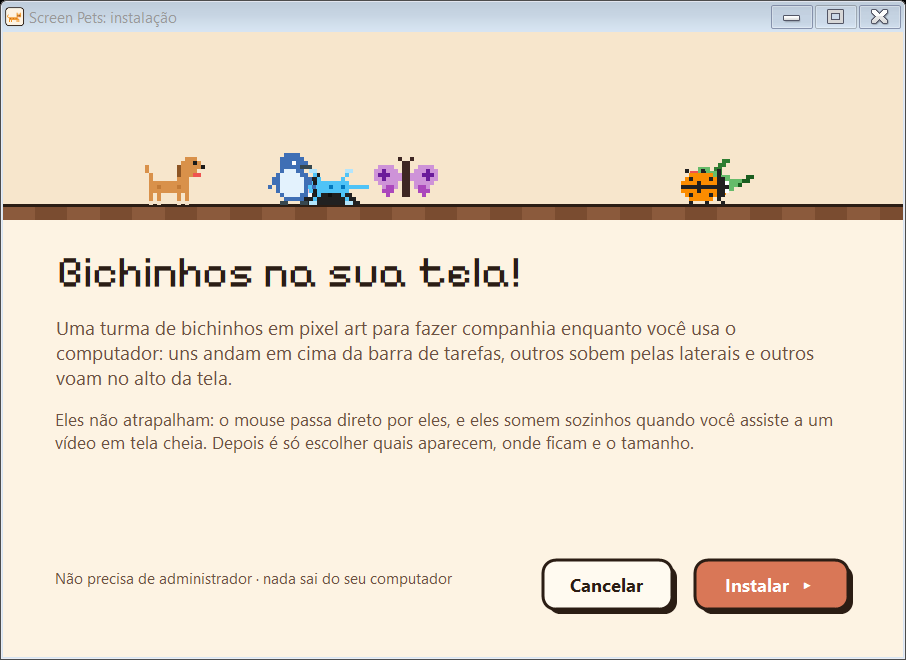
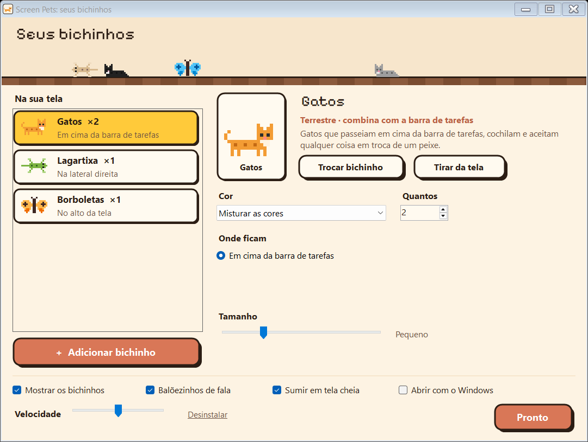
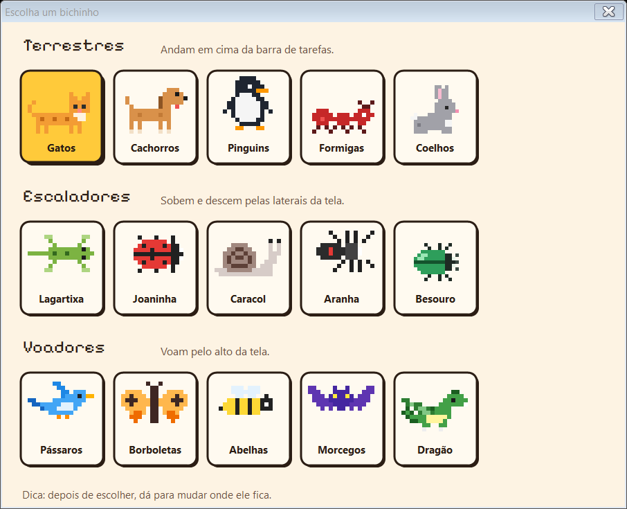
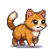

Gatos passeando em cima da barra de tarefas, uma lagartixa subindo pela lateral, pássaros voando no alto. Uma turminha para fazer companhia enquanto você usa o computador, sem atrapalhar nada.
Gatos, cachorros, pinguins, formigas e coelhos passeando, cochilando e brincando.
na barra de tarefasLagartixa, joaninha, caracol, aranha e besouro grudados na parede.
nas laterais ou no altoPássaros, borboletas, abelhas, morcegos e até um dragão.
no alto ou nas lateraisQuem anda fica no chão. Quem escala e quem voa divide o resto: uma aranha pode passear pelo teto e uma borboleta pode voar perto da lateral.
Simulador
Esta é a mesma tela de configuração do programa, funcionando aqui no navegador com os mesmos desenhos. Tudo vale na hora: brinque à vontade e, quando gostar, é só instalar e montar igual.
Ninguém na tela. Adicione um bichinho!
A tela daqui é menor que a sua, então os bichinhos parecem maiores. No computador, o tamanho "Pequeno" já dá para ver bem.
A turma
Todos vêm de graça e cada um tem várias cores (clique nas bolinhas). Dá para misturar as cores numa turma só.
O programa
Sem assistente comprido e sem nada técnico. Tudo vale na hora: não tem botão de salvar.



O mouse passa direto por eles. Não aparecem no Alt+Tab e nunca roubam o foco da janela em que você está.
Vídeo, jogo ou apresentação ocupando a tela inteira? Eles saem de cena sozinhos e voltam depois.
Botão direito no ícone perto do relógio: Esconder (para uma reunião, por exemplo) ou Sair. No macOS e no Linux: screenpets esconder.
Depois de instalado, volta sozinho sempre que o computador ligar, no Windows, no macOS e no Linux. Dá para desligar isso na configuração.
De vez em quando um deles comenta alguma coisa. Quando dois se cruzam, às vezes param para se cumprimentar.
Os terrestres andam na barra de tarefas, os escaladores grudam nas paredes e os voadores ficam no céu da tela.
Supporters Pack em breve
Para quem quiser apoiar o projeto: os mesmos bichinhos redesenhados em HD, com animações quadro a quadro e mais capricho em cada detalhe. O Screen Pets e todos os bichinhos de hoje continuam grátis.

Ainda sem data. Quando sair, ele aparece aqui e na página de apoio.
Download
Baixe o instalador, clique em Instalar e os bichinhos aparecem na hora.
Baixar para WindowsWindows 10 ou 11 · cerca de 250 KB · não precisa de administrador nem de internet depois de baixar
O Windows pode mostrar "o Windows protegeu o computador" porque o executável não é assinado. É só clicar em Mais informações → Executar assim mesmo.
No macOS e no Linux, cole no terminal:
curl -fsSL https://screenpets.serignolli.com/install.sh | sh
macOS 11 ou mais novo (Intel ou Apple) e Linux com X11 ou XWayland. Instala sem senha de administrador, liga junto com o computador e abre a escolha da turma no próprio terminal. Para mudar depois: screenpets.
ScreenPets-Setup.exePerguntas
Não. Os cliques passam direto por eles, as janelas deles não aparecem no Alt+Tab e nunca roubam o foco. Ficam só nas bordas da tela e somem sozinhos quando algo ocupa a tela inteira.
Não. Tudo roda no seu computador: sem conta, sem telemetria, sem servidor.
Não: quem anda fica em cima da barra de tarefas. Os escaladores e os voadores é que dividem o alto e as laterais, então dá para ter uma aranha passeando pelo teto ou uma borboleta voando perto da lateral.
No Windows, em %LOCALAPPDATA%\Programs\ScreenPets, só para o seu usuário (por isso não pede administrador), com o atalho Screen Pets na área de trabalho e no menu Iniciar. No macOS, em ~/Library/Application Support/ScreenPets; no Linux, em ~/.local/share/screenpets (com Screen Pets no menu de aplicativos). Nos dois, o comando screenpets fica em ~/.local/bin.
Sim: é o mesmo programa, com os mesmos bichinhos e o mesmo jeito de andar, subir e voar. A diferença é que a configuração é feita no terminal (o comando screenpets), em vez de uma janela, e no lugar da barra de tarefas eles andam em cima do Dock ou do painel. No Linux, ele precisa de X11 ou XWayland (o normal no Ubuntu, Fedora, Mint e companhia) e de um compositor para a transparência.
No Windows, clique no ícone dos bichinhos perto do relógio ou abra Screen Pets pelo atalho: a tela de configuração é a mesma do simulador aqui de cima. No macOS e no Linux, digite screenpets no terminal. Tudo vale na hora.
Quase nada: são desenhos pequenos atualizados algumas dezenas de vezes por segundo. Escondidos (ou em tela cheia), eles param de vez.
Por enquanto os bichinhos ficam só no monitor principal.
No Windows, por Aplicativos instalados, como qualquer programa, ou pelo link Desinstalar no cantinho da tela de configuração. No macOS e no Linux: screenpets desinstalar.
Um pacote com os bichinhos redesenhados em alta definição, com animações melhores, para quem quiser apoiar o projeto. Ainda está sendo feito. O programa e todos os bichinhos de hoje continuam grátis.
É o irmão dele para quem não usa terminal: os bichinhos terrestres vieram do CmdCrew, que trabalha junto com o Claude Code. O Screen Pets não precisa de agente nenhum, é só companhia.